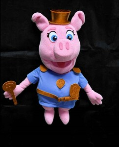

Trade Mark Journal No.2025/035 29 August 2025
UK00004247890 12 August 2025 (16,18,21,28,35,36,41)

- Class 16
- Dye-sublimation print paper; Print letters; Laser print paper; Print blocks; Print characters; Print wheels; Prints; Digital printing paper; Printed publications; Publications (Printed -); Printing paper; Graphic prints; Printed paper labels; Lithographic prints; Giclee prints; Photographic printing paper; Paper for printing photographs; Photo prints; Printed books; Canvas prints; Printed art reproductions; Printed stationery; Printed paper invitations; Printed coupons; Printed flyers; Offset printing paper for pamphlets; Printing fonts; Cartoon prints; Printed periodicals; Printed paper signs; Silk screen prints; Annuals [printed publications]; Printed brochures; Photographic prints; Printed booklets; Supercalendered printing paper; Printed calendars; Printed advertisements; Color prints; Printed advertising boards of paper; Printed patterns; Pictorial prints; Photographs [printed]; Printed photographs; Laser printing paper; Printed newsletters; Ink sheets for use in reproducing images in the printing industry; Art prints; Printing papers; Printed invitations; Graphic art prints; Forms, printed; Printed forms; Printed periodical publications; Printed music; Paper stock [printing paper]; Printed packaging materials of paper; Printed cartoon strips; Fine art prints; Printed programmes; Printed pamphlets; Printed tickets; Prints [engravings]; Engravings [prints]; Reel paper for printers; Printed menus; Printed horoscopes; Training manuals; Publication paper; Periodical publications; Periodical magazines; Advertising publications; Promotional publications; Magazine paper; Stationery; Envelopes [stationery]; Paper stationery; Stickers [stationery]; Office stationery; Stencils [stationery]; Wrappers [stationery]; Binders [stationery]; Stationery boxes; Stationery folders; Folders [stationery]; Office paper stationery; Writing stationery; Scented stationery; Adhesives for stationery; Paper folders [stationery]; Thumbtacks [stationery]; Pads [stationery]; Transparencies [stationery]; Party stationery; Pencil ornaments [stationery]; Pencil ornaments (stationery); Files [stationery]; Protractors [for stationery and office use]; School supplies [stationery]; Envelopes for stationery use; Copying paper [stationery]; Seals [stationery]; Covers [stationery]; Stationery and educational supplies; Marking pens [stationery]; Paper sheets [stationery]; Pocket books [stationery]; Pins [stationery]; Announcement cards [stationery]; Clips for paper [stationery]; Manifolds [stationery]; Cases for stationery; Stationery cases; Index cards [stationery]; Glitter pens for stationery purposes; Stationery (Cabinets for -) [office requisites]; Cabinets for stationery [office requisites]; Document holders [stationery]; Glitter for stationery purposes; Adhesives for stationery purposes; Glue pens for stationery purposes; Writing cases [stationery]; Desktop cabinets for stationery [office requisites]; Adhesive pads [stationery]; Tapes (adhesive -) [stationery]; Self-adhesive tapes for stationery and household purposes; Self-adhesive tapes for stationery or household purposes; Adhesives for stationery or household purposes; Adhesive foils stationery; Felt mats for Chinese calligraphy (stationery); Plantable seed paper [stationery]; Marking inks for stationery purposes; Document files [stationery]; Pastes for stationery or household purposes; Organizers for stationery use; Label printing machines for household and stationery use; Self-adhesive tapes for stationery use; Adhesives for stationery or household use; Glue for stationery or household purposes; Document holders being articles of stationery; Adhesives for stationery and household use; Gummed tape [stationery]; Paste for stationery or household purposes; Adhesive tapes for stationery or household purposes; Gummed cloth for stationery purposes; Adhesive tapes for stationery purposes; Pastes and other adhesives for stationery or household purposes; Rubber bands [stationery]; Seaweed glue for stationery; Plastic adhesives for stationery or household purposes; Notepads; Rubber cements for stationery; Gelatine glue for stationery or household purposes; Glue for stationery or household use; Gums [adhesives] for stationery or household purposes; Gluten [glue] for stationery or household purposes; Isinglass for stationery or household purposes; Adhesive bands for stationery purposes; Gum arabic glue for stationery or household purposes; Spirit gum for stationery purposes; Paper embossers [office requisites]; Latex glue for stationery or household purposes; Glitter glue for stationery purposes; Letterhead paper; Notepaper; Letterheads; Adhesive tape for stationery purposes; Adhesives [glues] for stationery or household purposes; File pockets for stationery use; Adhesive tape cutters being stationery; Starch paste for stationery; Adhesive tape dispensers for household or stationery use; Paper envelopes for packaging; Wood pulp board [stationery]; Automatic paper clip dispensing machines for office or stationery use; Reinforced stationery tabs; Stapling guns (Electric -) for stationery use; Bank checks; Money holders; Money clips; Clips (Money -); Checkbooks [cheque books] (Holders for -); Holders for checkbooks [cheque books]; Precious metal money clips; Metal money clips; Trays for sorting and counting money; Cash receipt books; Money clips of precious metals; Pens; Ballpoint pens; Ball-point pens; Felt-tip pens; Ink pens; Ink for pens; Steel pens [styluses or stencil pens]; Rollerball pens; Refills for ballpoint pens; Inkless pens; Fountain pens; Stands for pens and pencils; Marker pens; Highlighter pens; Balls for ball-point pens; Ink for fountain pens; Tips for ballpoint pens; Boxes for pens; Coloured pens; Brush pens; Colouring pens; Drawing pens; Marking pens; Pens for marking; Ink cartridges for pens; Pen nibs; Ink cartridges for fountain pens; Ballpoint pen refills; Colour pens; Steel pens; Ball pens; India ink pens; Cases for pens; Pen trays; Stands for pens; Ball-point pen and pencil sets; Highlighting pens; Pen refills; Fiber-tip pens; Correction pens; Etching pens; Stylographic pens; Fibertip pens; Pen and pencil boxes; Felt pens; Pen boxes; Fibre-tip pens; Pen or pencil holders; Pen and pencil holders; Skin marker pens; Pen cartridges; Gel roller pens; Film pens; Marking pen refills; Fountain pen ink cartridges; Pen ink cartridges; Artists' pens; Pen holders; Pen and pencil cases; Porous tip pens; Felt writing pens; Felt marking pens; Pen calligraphy copybooks; Pen clips; Stands for pen and pencil; Felt tip pens; Ink pen refill cartridges; Roller ball pens; Pencils; Pen sets; Pencils with erasers; Ball point pens; Pen cases; Pens [office requisites]; Ink erasers; Pens of precious metal; Pen stands; Pen wipers; Pencil erasers; Pocket pen shields; Retractable pencils; Pencil trays; Ink pads; Ballpoint refill cartridges; Pencil eraser refills; Coloured pencils; Cartridges (Ink -) for writing instruments; Holders for notepads; Ink pads for seals; Inkwells; Nibs for writing instruments; Pencil boxes; Pencil cups; Colouring pencils; Pencils for colouring; Nibs; Pencil sharpeners; Sharpeners (Pencil -); Scribbling pads; Sharpeners for cosmetic pencils; Drawing pencils; Scribble pads; Ink for writing instruments; Pen rests; Propelling pencil refills; Ink sticks; Pencil holders; Inks for pads; Decorations for pencils; Nibs of gold for writing instruments; Ink stamps; Holders for notebooks; Writing paper pads; Whiteboard erasers; Paper lunch bags; Paper shopping bags; Plastic shopping bags; Shopping bags of paper or plastic; Paper bags; Bags of paper; Plastic bags for packing; Paper party bags; Paper bags and sacks; Paper for bags and sacks; Paint boxes [articles for use in school]; School cones, empty; Sandwich bags; Padded bags of paper; Paper for making bags and sacks; Garbage bags of paper [for household use]; Dustbin bags; Paper gift bags; Gift bags; School photographs; Sandwich bags [paper]; Carrier bags; Carrier bags of paper or plastic; Paper bags for packaging; Packaging bags of paper; Garbage bags of plastic; Food bags of paper or plastics; Photo albums; Mini photo albums; Photograph albums; Picture postcards; Pictures; Photograph album pages; Brag books [photo albums]; Picture cards; Photograph mounts; Photographs; Photo storage boxes; Watercolor pictures; Photo mounting corners; Coloring pictures; Photograph corners; Postcards and picture postcards; Colouring pictures; Photo albums and collectors' albums; Paper picture mounts; Picture books; Art pictures; Cardboard picture mounts; Prints in the nature of pictures; Picture framing mat boards; Mounts of paper for pictures; Signed photographs; Paintings [pictures], framed or unframed; Photographic albums; Postcard paper; Cling film; Plastic film for packaging; Seaweed-based film for wrapping; Decoration and art materials and media; Wallpaper sample book.
- Class 18
- Bags for school; School bags; School backpacks; School book bags; Satchels (School -); School satchels; School knapsacks; Bags; Gym bags; Athletics bags; Athletic bags; Grocery tote bags; Sports bags; Bags for sports; Tote bags; Duffle bags; Bags for clothes; Duffel bags; Belt bags and hip bags; Reusable shopping bags; Bags for sports clothing; Backpacks; Luggage bags; Nose bags [feed bags]; Bags (Nose -) [feed bags]; Music bags; Bags for campers; Sport bags; Toilet bags; Camping bags; Drawstring bags; Carry-all bags; Shoe bags; Make-up bags; Duffel bags for travel; Canvas shopping bags; Beach bags; Toiletry bags; Work bags; Flight bags; Leather shopping bags; Messenger bags; Textile shopping bags; Carry-on bags; Belt bags; Game bags; Travel bags; Bags for travel; Makeup bags; Diaper bags; Randsels [Japanese school satchels]; Mesh shopping bags; Mesh bags for shopping; Evening bags; Hunting bags; Shoe bags for travel; Carrying bags; Traveling bags; Weekend bags; Crossbody bags; Kit bags; Wheeled shopping bags; Travelling bags; Souvenir bags; Hiking bags; Cross-body bags; Cabin bags; Garment bags; String bags for shopping; Book bags; Knitting bags; Bucket bags; Canvas bags; All-purpose sports bags; Sling bags; Courier bags; Leather bags; Cloth bags; Boot bags; Attaché bags.
- Class 21
- Piggy banks; Coin banks (Piggy banks); Piggy banks of pottery; Piggy banks of china; Piggy banks of ceramic; Piggy banks of earthenware; Piggy banks, not of metal; Non-metal piggy banks; Non-metallic piggy banks; Coin banks; Metal coin banks; Coin banks of precious metal; Coin banks, not of metal; Coin banks, not of precious metal; Non-metal coin banks; Money boxes, not of metal.
- Class 28
- Toy banks; Angling bank stick supports; Play money; Money guns being toys; Toys incorporating money boxes; Bags for skateboards; Bag stands for golf bags; Ski bags; Golf bags; Bowling bags; Bags for fishing; Cricket bags; Lacrosse ball bags; Trolley bags for golf equipment; Bowls bags; Golf club bags; Soccer ball bags; Punching bags; Toys; Toys, games, and playthings; Toys and playthings for pets; Ride-on toys; Cuddly toys; Puzzles [toys]; Toys for sandpits; Plush toys; Stuffed toys; Inflatable toys; Toys for babies; Noisemakers [toys]; Toys for pets; Wind-up toys; Fidget toys; Toys for use in perambulators; Radio-controlled toys; Plastic toys; Scooters [toys]; Crib toys; Toys for animals; Mobiles [toys]; Toys, games and playthings for pet animals; Pet toys; Windup toys; Rattles [toys]; Toys for cats; Toys for infants; Wooden toys; Model cars [toys or playthings]; Toys and playthings for pet animals; Toys for dogs; Toy dolls; Educational toys; Outdoor toys; Models being toys; Toy playsets; Bendable toys; Bath toys; Dog toys; Infant toys; Sandbox toys; Action figures [toys or playthings]; Bathtub toys; Electronic toys; Whistles [toys]; Inflatable ride-on toys; Sand toys; Controllers for toys; Soft toys; Drones [toys]; Miniature car models [toys or playthings]; Bouncing toys; Cloth toys; Toy figurines; Tricycles for infants [toys]; Musical toys; Play mats for use with toy vehicles [playthings]; Toy furniture; Toys for birds; Mechanical toys; Wheeled toys; Clockwork toys; Developmental toys; Crib mobiles [toys]; Plastic toys for use in the bath; Fluffy toys; Stuffed animals [toys]; Inflatable bath toys; Stacking toys; Rocking toys; Fabric toys; Water toys; Plastic models being toys; Modular toys; Model toys; Whack-a-mole toys for pets; Play mats incorporating infant toys [playthings]; Toy prams; Drawing toys; Action toys; Stuffed and plush toys; Stuffed plush toys; Plush stuffed toys; Battery-operated action toys; Sketching toys; Children's toys; Squeezable squeaking toys; Toy bicycles; Plastic character toys; Toy tableware; Smart toys; Construction toys; Clockwork toys [of plastics]; Whistling toys; Articles of clothing for toys; Push toys; Toy wheelbarrows; Squeeze toys; Talking toys; Toy bakeware and toy cookware; Bendy balls being toys; Toy mobiles; Toy xylophones; Chewing toys for parrots; Stuffed bean-filled toys; Toy animals; Clothing for toy figures; Pull toys; Toy cars; Toys for pet animals; Toy strollers; Assembly toys; Water-squirting toys; Toy balloons; Toy scooters; Intelligent toys; Toy hats; Music box toys; Toy cookware; Toy harmonicas; Punching toys; Toy automobiles; Smart plush toys; Toy robots; Toy tools; Toy weapons; Xylophones being musical toys; Toys in the form of puzzles; Soft sculpture toys; Novelty toys for parties; Toy glockenspiels; Inflatable pool toys; Costumes being childrens playthings; Toy bakeware; Puzzle mats [toys]; Toy balls; Toy pushchairs; Toy airplanes; Toy vehicles; Playthings; Toy cameras [not capable of taking a photograph].
- Class 35
- Inventorying merchandise; Display services for merchandise; Merchandising; Product merchandising; Online retail store services relating to clothing; Retail services connected with the sale of clothing and clothing accessories; Mail order retail services for clothing accessories; Promoting the sale of fashion goods through promotional articles in magazines; Merchandizing; Retail of third-party pre-paid cards for the purchase of clothing; Retail services relating to sporting goods; Promoting the sale of goods and services of others through the distribution of printed material and promotional contests; Online retail store services in relation to clothing; Promoting the sale of goods and services of others through promotional events; Business merchandising display services; Product merchandising for others; Retail services in relation to clothing accessories; Wholesale services relating to sporting goods; Advertising services relating to the sale of goods; Promoting the goods and services of others through the distribution of discount cards; Online retail services relating to clothing; Mail order retail services for clothing; Mail order retail services connected with clothing accessories; Retail services relating to clothing; Online retail services relating to handbags; Advertising services to promote the sale of beverages; Mail order retail services related to foodstuffs; Procuring of contracts for the purchase and sale of goods; Online retail store services relating to cosmetic and beauty products; Online retail services relating to toys; Mail order retail services related to non-alcoholic beverages; Online retail services relating to jewelry; Retail services relating to fake furs; Retail services relating to jewelry; Arranging of contracts for the purchase and sale of goods and services, for others; Promoting the goods and services of others through the administration of sales and promotional incentive schemes involving trading stamps; Retail services via catalogues related to foodstuffs; Preparing promotional and merchandising material for others; Online retail services relating to luggage; Retail services relating to furs; Retail of third-party pre-paid cards for the purchase of entertainment services; Retail services relating to automobile accessories; Wholesale services relating to clothing; Retail services in relation to downloadable virtual clothing; Retail services in relation to clothing; Unmanned retail store services relating to drink; Retail services in relation to downloadable virtual handbags; Promoting the goods and services of others by arranging for sponsors to affiliate their goods and services with sporting activities; Retail services relating to delicatessen products; Retail services relating to bakery products; Online retail services for downloadable virtual clothing; Mail order retail services related to beer; Unmanned retail store services relating to food; Mail order retail services related to alcoholic beverages (except beer); Online retail services in relation to downloadable virtual clothing; Promotion of goods and services through sponsorship of sports events; Promoting the goods and services of others through discount card programs; Sales promotions at point of purchase or sale, for others; Promotion of goods and services for others; Promotion of goods and services through sponsorship; Retail services via catalogues related to alcoholic beverages (except beer); Retail services in relation to stationery supplies; Retail services in relation to fashion accessories; Procurement of contracts for the purchase and sale of goods and services; Retail services connected with the sale of furniture; Procurement of contracts for the purchase and sale of goods and services for others; Online retail services in relation to downloadable virtual handbags; Retail services via catalogues related to beer; Advertising particularly services for the promotion of goods; Purchasing of goods and services for other businesses; Mail order retail services for cosmetics; Promoting the goods and services of others by arranging for sponsors to affiliate their goods and services with sports competitions; Marketing the goods and services of others by distributing coupons; Trade promotional services; Retail services relating to candy; Sales promotion services; Retail services in relation to downloadable virtual headwear; Online retail services relating to cosmetics; Retail services via catalogues related to non-alcoholic drinks; Retail services in relation to toys; Negotiation of contracts relating to the purchase and sale of goods; Retail services relating to furniture; Organization of fashion parades for sales promotion purposes; Retail services in relation to baked goods; Retail services relating to horticultural products; Retail services in relation to downloadable virtual footwear; Promotion of goods and services through sponsorship of international sports events; Online retail services in relation to downloadable virtual headwear; Promoting the goods and services of others by arranging for sponsors to affiliate their goods and services with awards programs; Wholesale services relating to fake furs; Wholesale services relating to jewelry; Retail services in relation to sporting equipment; Online retail services in relation to downloadable virtual footwear; Retail services in relation to bakery products; Wholesale services in relation to clothing; Wholesale services relating to automobile accessories; Retail of third-party pre-paid cards for the purchase of multimedia content; Retail services in relation to bags; Retail services in relation to pet products; Business consultancy services relating to management of fund raising campaigns; Business consultancy services relating to the marketing of fund raising campaigns; Financial marketing; Business advice relating to growth financing.
- Class 36
- Bank cheque card services; Issuing of bank cheques; Rental of bank cash dispensing machines; Money brokerage; Rental of paper money and coin counting machines; Bank note checking; Financial banking services for the deposit of money; Bank card services; Savings bank services; Issuance of bank checks; Cash, check (cheque) and money order services; Bank account services; Investment bank services; Bank account and savings account services; Provision of cash dispenser facilities for money deposit; Money deposit services; Issuing of vouchers for use as money; Merchant bank (Services of a -); Financial banking services for the withdrawal of money; Bank card, credit card, debit card and electronic payment card services; Banking services relating to the deposit of money; Financial services related to the issuance of bank cards and debit cards; Money transfer; Cheque account services for the cashing of cheques; Credit and cash card services; Mortgage banking; Deposit savings; Investment banking; Financial management of cash accounts; Financial services in the field of money lending; Financial services relating to bank cards; Collection of money owed from settlements ; Money lending services; Exchanging money; Money (Exchanging -); Issuing of travellers' cheques and currency vouchers; Mortgage banking and brokerage; Banking; Rental of cash machines and cash counters; Cash replacement rendered by credit card; Issuing of cash vouchers; Bank account information services; Provision of cash dispenser facilities for money withdrawal; Financial banking; Cash card services; Mortgage banking and mortgage brokerage; Brokerage of currency; Electronic transfer of money; Electronic transfers of money; Cashing of cheques; Money exchange and transfer; Providing bank account information by telephone; Trusteeship of money; Exchange of money (Agencies for the -); Rental of banknote and coin counting or sorting machines; Investment of money (Services for -); Payment and receipt of money as agents; Mortgage banking and mortgage broking; Merchant banking; Rental of money counting and sorting machines; Rental of machines for counting or sorting banknotes and coins; Dispensing of cash; Cashing of personal cheques; Cash and foreign exchange transactions; Cheque guarantee card services; Mortgage banking insurance; Issuance of credit and debit cards; Credit and debit card services; Cheque cashing services; Valuation of pictures; Arranging the hire purchase of goods; Lending services to merchants for the purpose of financing store inventories of vehicles; Collection of payments for goods and services; Finance leasing; Corporate finance; Finance services; Project finance; Corporate finance consultancy; Corporate finance services; Arranging of finance; Raising of finance; Finance (Raising of -); Provision of finance; Finance (Provision of -); Trade finance services; Arranging finance for businesses; Provision of finance for leasing; Personal finance services; Credit sales (Provision of finance for -); Provision of finance for credit sales; Provision of finance for business ventures; Provision of finance for sales; Provision of finance for trade credit; Trade credit (Provision of finance for -); Consultations relating to corporate finance; Provision of finance for enterprises; Arranging the finance for home loans; Consultancy services relating to corporate finance; Provision of trade finance; Providing finance for credit sales; Provision of finance for companies; Provision of finance for hire-purchase; Consulting services relating to corporate finance; Advisory services relating to corporate finance; Advisory services relating to investment finance; Lease purchase finance; Provision of commercial finance; Advisory services relating to investments and finance; Banking and financing services; Professional consultancy relating to finance; Consultancy services relating to finance; Corporate financing; Research services relating to finance; Consultancy services relating to personal finance; Advisory services relating to finance; Arranging finance for construction projects; Financial loans to commerce; Arranging the provision of finance; Provision of finance for property development; Provision of finance for the purchase of vehicles; Provision of finance for equipment leasing; Provision of equipment finance; Financing of personal loans; Advice on finance for retirement; Provision of finance for real estate development; Arranging finance for films; Mortgage loans and financing services; Arranging the provision of finance for construction operations; Loans [financing]; Loans (Financing of -); Financing of loans; Financial loan consultancy; Mortgage financing services; Financing and loan services; Financing of investments; Financial fund management; Loan financing; Arranging finance for radio programs; Building society services relating to finance; Equity financing; Provision of finance for civil engineering constructions; Financial consultancy relating to loans; Arranging the provision of finance for real estate purchase; Financial investment fund services; Provision of financial information relating to the finance industry involved in environmentally focused investments; Arranging finance for television programs; Management of corporate finances; Financial management relating to banking; Mortgage investment management; Provision of lease-purchase finance facilities; Credit financing; Financing services for the securing of funds for business; Sales credit financing; Information services relating to finance; Hire-purchase financing; Financial underwriting and securities issuance (investment banking); Management of a capital investment fund; Capital investment fund management; Arranging the provision of finance to pay medical expenses; Investment banking services; Financing of property loans; Financial management of funds; Auto financing services; Provision of finance for the purchase of motor vehicles; Financial investment management services; Investment fund management; Fund investment management; Financial consultancy relating to student loan services; Commodities financing; Provision of finance for leisure centres; Property (Real estate -) finance; Administration of fund investment; Arranging investments, in particular capital investments, financing services and insurance; Administration of mortgage business; Investment services in the field of treasury bonds; Financing of home loans; Banking and financial services; Financial and monetary services, and banking; Financing of loans against security; Financial investment in the field of securities; Financial management services relating to banking institutions; Financial loan services; Provision of finance for health care; Financial management relating to investment; Management of capital investment funds; Advice on finance during retirement; Financing services; Pension fund financial management; Financing of bridging loans; Financial leasing; Consultancy concerning financing of energy projects; Retail financing services; Capital fund management; Financial investment; Financing of communal loans; Personal financial banking services; Financial and investment consultancy services; Brokerage services for arranging financing by other financial institutions; Management of investment funds; Investment management of funds; Private equity fund investment services; Administration of capital investment services; Property investment banking services.
- Class 41
- Education; Vocational education; Health education; Pre-school education; Education and training; Academies [education]; Education and instruction; Services of schools [education]; Education services; University education services; Education, teaching and training; Academy services (Education -); Education academy services; Academy education services; Vocational education and training services; Religious education; Education (Religious -); Training and education services; Education and training services; Music education; Education and instruction services; Education examination; Kindergarten services [education or entertainment]; Provision of education courses; Educational services for providing courses of education; Career counseling [education]; Teaching of diet education; Provision of training and education; Provision of education and training; Higher education services; Providing of education; Physical education; Education academy services for teaching languages; Entertainment, education and instruction services; Education academy services for teaching art history; Medical education services; Computer education training; Education services relating to vocational training; Education information; Information (Education -); Primary education services; Adult education services; Residential education courses; Computer education training services; Linguistic education and training services; Boarding school education; Education and training consultancy; Physical education instruction; Primary education services relating to literacy; Further education; Vocational education relating to home safety; Education academy services for teaching acting; Vocational education relating to self-defence; Sports education services; Musical education services; Physical health education; Legal education services; Physical education services; Technological education services; Online education services; Providing continuing medical education courses; Lingual education; Provision of physical education; Management of education services; Management education services; Education services related to the arts; Dietary education services; Education services relating to nutrition; Education academy services for teaching construction drafting; Singing education; Education services relating to health; Providing continuing dental education courses; Education services relating to religion; Career counselling relating to education and training; Educational services provided by institutes of higher education; Vocational education in the field of mechanics; Education courses relating to automation; Club education services; Education and training services in the field of occupational health and safety; Education and training in the field of music and entertainment; Vocational education relating to personal safety; Research in the field of education; Adult education services relating to medicine; Providing continuing nursing education courses; Adult education services relating to finance; Education information services; Guidance (Vocational -) [education or training advice]; Vocational guidance [education or training advice]; Education services for imparting language teaching methods; Education and training in the field of occupational health and safety; Secondary school educational services; Sporting education services; Education services relating to medicine; Education, entertainment and sport services; Education services relating to business training; Educational and teaching services; Training or education services in the field of life coaching; Education courses relating to the travel industry; Providing continuing legal education courses; Career counselling [training and education advice]; Education services relating to the veterinary profession; Adult education services relating to law; Vocational education relating to first aid; Blindness prevention education services; Education in the field of computing; Education services relating to yoga; Adult education services relating to commerce; Vocational education for young people; Provision of education courses relating to electronics; Education services in the nature of courses at the university level; Education services relating to conservation; Education, entertainment and sports; Education in the field of occupational health and safety; Education services relating to music; Career advisory services (education or training advice); Provision of education courses relating to telecommunications; Adult education services relating to banking; English language education services; Education services relating to commerce; Education in the field of computing science; Adult education services relating to pharmacy; Education services relating to industry; Education services relating to hygiene; Provision of facilities for education; Educational services provided by institutes of further education; Education services relating to the cinema; Residential education courses relating to archery; Organization of education competitions; Provision of education courses relating to computers; Education in movement awareness; Education services relating to fashion; Adult education services relating to management; Education services relating to photography; Education services relating to sports; Organization of competitions [education or entertainment]; Competitions (Organization of -) [education or entertainment]; Organization of competitions for education or entertainment; Education services relating to banking; Education services relating to pharmacy; Adult education services relating to auditing; Educational and training services relating to healthcare; Education services relating to food technology; Education services relating to conservation of the environment; Education and training in the field of automotive engineering; Education and training in the field of business management; Providing education courses relating to the travel industry; Adult education services relating to accounting; Publication of printed matter and printed publications; Rental of printed publications; Publication of printed directories; Conducting training seminars; Organisation of training seminars; Conducting workshops [training]; Conducting training seminars for clients; Conducting courses, seminars and workshops; Training; Seminars; Workshops for training purposes; Training courses; Providing online training seminars; Organisation of seminars relating to training; Arranging and conducting of training seminars; Arranging of workshops and seminars; Workshops (Arranging and conducting of -) [training]; Arranging and conducting of workshops [training]; Arranging and conducting of training workshops; Conducting workshops and seminars in personal awareness; Arranging professional workshop and training courses; Organisation of training courses; Coaching [training]; Training in yoga; Conducting workshops and seminars in self awareness; Arranging of seminars relating to training; Arranging of training courses; Conducting of instructional seminars; Educational seminars; Training of teachers; Arranging and conducting of workshops and seminars in self-awareness; Organisation of seminars and conferences; Training services; Instructional and training services; Providing courses of training; Organization of seminars; Arranging and conducting of seminars and workshops; Arranging and conducting of workshops and seminars; Training and further training consultancy; Organising of education seminars; Organisation of conferences relating to vocational training; Meditation training; Written training courses; Vocational training; Conducting of seminars and congresses; Training and instruction; Arranging and conducting of training courses; Conducting seminars; Teacher training services; Educational and training services; Training courses (Provision of -); Provision of training courses; Organising of educational seminars; Organisation of seminars; Organisation of conferences relating to training; Training consultancy; Residential training courses; Vocational training services; Organisation of educational seminars; Practical training services; Conducting training courses relating to nutrition online; Personnel training; Vocational skills training; Arranging of presentations for training purposes; Arranging and conducting of soccer training programs; Vocational training courses (Provision of -); Aerobics training services; Courses (Training -) relating to management; Postgraduate training courses; Arrangement of training courses in teaching institutes; Arranging and conducting conferences and seminars; Arranging of conferences relating to training; Practical training; Conducting training sessions on physical fitness online; Arranging and conducting of youth soccer training programs; Conducting workshops [training] relating to engine maintenance; Training services for personnel; Arranging of demonstrations for training purposes; Personal coaching [training]; Training of referees; Conducting of tours for training purposes; Provision of training courses in personal development; Training in catering; Organisation of training; Conducting of courses relating to administrative training; Consultancy services relating to the development of training courses; Production of training videos; Sales training services; Training services for nurses; Providing of continuous training courses; Organisation of tours for training purposes; Training in communication techniques; Courses (Training -) relating to insurance; Courses (Training -) relating to research and development; Employment training; Conducting workshops [training] relating to engine repair; Organisation of symposia relating to training; Courses (Training -) relating to medicine; Management training services; Conducting workshops and seminars in art appreciation; Conducting of workshops and seminars in art appreciation; Fitness training services; Conducting workshops [training] relating to power boat maintenance; Training services for nannies; Training of sports teachers; Training of swimming teachers; Arranging and conducting of lectures for training purposes; Conducting of educational conferences; Courses (Training -) relating to finance; Consultancy relating to vocational skills training; Courses (Training -) relating to customer services; Life coaching (training); Arranging and conducting of educational seminars; Staff training services; Organisation of continuing educational seminars; Educational and training programs in the field of risk management; Publication of educational and training guides; Organisation of computer related training courses; Training in business skills; Conducting training courses relating to diet online; Arranging of seminars; Physical training services; Courses (Training -) relating to banking; Training related to nutrition; Training (Practical -) [demonstration]; Practical training [demonstration]; Sales personnel training services; Providing of training; Providing training; Arranging of competitions for training purposes; Courses (Training -) relating to engineering; Advanced training; Conducting educational workshops in the field of business; Organisation of Webinars; Postgraduate training courses relating to management studies; Business training; Organisation of seminars relating to education; Training related to cooking; Training in the development of computer programs; Educational services relating to sales training; Conducting workshops [training] relating to power boat repair; Training of umpires; Vocational skills training (Provision of -); Newspaper publication; Publication of journals; Publication of periodicals; Publication of magazines; Magazines (Publication of -); Publication of newspapers; Publication of catalogues; Publication of books; Books (Publication of -); Publication of catalogs; Publication of prospectuses; Publication of photographs; Publication of textbooks; Publication of booklets; Publication of brochures; Publication of texts; Electronic publication; Publication of calendars; Publication of posters; Publication of leaflets; Publication of manuals; Publication of electronic magazines; Publication of music; Publication services; Publication of scientific information journals; Publication of year books; Preparation of texts for publication; Services for the publication of magazines; Publication of text books; Publication of consumer magazines; Publication of printed matter; Publication of instructional literature; Magazine publishing; Publication of educational books; Publication and editing of printed matter; Publication of books, reviews; Publication of educational texts; Services for the publication of books; Online publication of electronic newspapers; Publishing services for periodical and non-periodical publications, other than publicity texts; Publication of electronic books and journals on-line; On-line publication of electronic books and journals; Publication of books, magazines, almanacs and journals; Publication of periodicals and books in electronic form; Publication of audio books; Publishing of electronic publications; Online publication of electronic books and journals; Publication of electronic books and journals online; Services for the publication of newsletters; Publication of educational printed matter; Publication of medical texts; Newspaper publishing; Electronic online publication of periodicals and books; Publication of printed matter, other than publicity texts; Publication of music books; Publication of newspapers, periodicals, catalogs and brochures; Publication of calendars of events; Publishing of medical publications; Publication of musical texts; Publishing of journals; Consultation services relating to the publication of magazines; Publication of educational materials; Publication of directories relating to travel; Publication of multimedia material online; Electronic publication services; Publication of directories relating to tourism; On-line publication of electronic books and journals (non-downloadable); Services for the publication of guide books; Publication of books relating to entertainment; Issue of publications; Book publishing; Services for the publication of maps; Publishing; Publication of printed matter relating to education; On-line publication of electronic books and journals [not downloadable]; Consultation services relating to the publication of books; Publication of texts in the form of CD-ROMs; Publication of printed matter, other than publicity texts, in electronic form; Publication of texts, other than publicity texts; Texts (Publication of -), other than publicity texts; Publication of fact sheets; Publishing of newspapers; Book and review publishing; Publication of books relating to information technology; Publication of printed matter in electronic form; Publication of electronic books and periodicals on the Internet; Publication of training manuals; Publication of sheet music; Multimedia publishing of electronic publications; Publication of texts in the form of electronic media; Multimedia publishing of magazines, journals and newspapers; Consultation services relating to the publication of written texts; Publication of books relating to television programmes; Multimedia publishing of journals; Publication of online reviews in the field of entertainment; Publishing of newsletters; Publishing of scientific papers; Publishing of electronic books and journals on-line; Publishing of web magazines; Publication of lyrics of songs in book form; Publication of educational teaching materials; Publishing of documents; Publishing of books, magazines; Publishing of electronic books and journals online; Electronic publication of texts and printed matter, other than publicity texts, on the Internet; Publication of books relating to rugby league; Multimedia publishing of magazines; Online electronic publishing of books and periodicals; Publishing, reporting, and writing of texts; Publication of printed matter in electronic form on the Internet; Multimedia publishing of newspapers; Publishing of books; Providing on-line electronic publication [not downloadable]; Publication of printed matter relating to pet fish; Boarding school services; Rental of toys; Photo editing; Portrait photography; Aerial photography; Leasing of motion picture cameras; Motion picture (Rental of -); Motion picture rental; Motion picture studio services; Portrait photography services; Photography; Rental of video tapes and motion pictures; Motion picture studios; Portrait painting; Film editing (Photographic -); Editing of printed matter containing pictures, other than for advertising purposes; Motion picture production; Rental of motion pictures; Motion pictures (Rental of -); Motion picture song production; Video editing; Photograph library searching services; Leasing of motion pictures; Showing of cinematographic and motion picture films; Production of motion pictures; Motion picture film production; Film and video tape film production; Film production, other than advertising films; Film production; Film directing, other than advertising films; Cinematographic film showings; Film studios; Film showings; Video film production; Production (Videotape film -); Videotape film production; Film editing; Production of cinema films; Film editing (Cinematographic -); Production of television and cinema films; Video and DVD film production; Film distribution; Production of films, other than advertising films; Film rental; Production of cinematographic films; Production of pre-recorded cinema films; Production of films; Production of video films; Production of television films; Video tape film production; Cinematographic film studio services; Production of film studies; Film hire; Television, radio and film production; Rental of cinema films; Conducting of film festivals; Exhibition of cine films; Film studio services; Rental of film negatives; Rental of film studios; Exhibition of video films; Rental of film projectors; Film production services; Entertainment by film; Rental of lighting apparatus for movie sets or film studios; Rental of cinematographic films; Movie theaters; Production of films in studios; Showing of cinematographic films; Movie studios; Studios (Movie -); Recording, film, video and television studio services; Presentation of films; DVD and CD-ROM film production; Hire of film projectors; Operating of film studios; Rental of reversal film; Rental of video films; Rental of film positives; Production of pre-recorded video films; Production of motion picture films; Shows and films production; Performance of films; Consultancy on film and music production; Rental of cinematographic and motion picture films; Exhibition of video film sound tracks; Provision of audio and visual media via communications networks; Provision of entertainment services through the media of television; Provision of entertainment services through the media of publications; Provision of entertainment services through the media of audio tapes; Library services and rental of media; Provision of entertainment services through the media of video-films; Provision of online information relating to audio and visual media; Publication of material on magnetic or optical data media; Provision of entertainment services through the media of cine-films; Digital video, audio and multimedia entertainment publishing services; Motion picture theaters; Rental of motion picture films; Leasing of motion picture projectors; Rental of motion picture and television scenery; Production of animated motion pictures; Services in the production of animated motion picture entertainment; Rental of motion pictures and of sound recordings; Entertainment services in the form of motion pictures; Movie showing; Services in the production of animated motion pictures and television features; Lending of books relating to finance; Coaching relating to finance; Training services relating to finance; Educational courses relating to finance.
Roda Ducommun